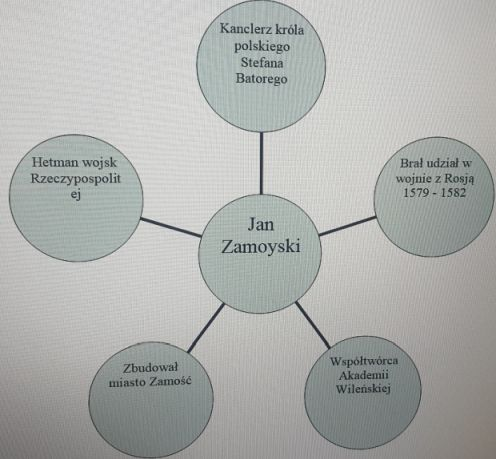

Nauczanie zdalne
Klasa 4A
wychowawca Grzegorz Gos
Czwartek 30.04.2020r
J.polski
Temat: Pisownia wyrazów z ą i ę.
Przeczytaj (nie przepisuj!!!) fragment wiersza Adama Asnyka pt.:
Słonko.
Wędrowało sobie słonko,
uśmiechnięte, jasne, złote,
szło nad gajem, szło nad łąką,
Napotkało w łzach sierotę.
(...)
2. Zapisz w zeszycie wszystkie wyrazy z ą i ę, które wystąpiły w
wierszu.
Przyroda
Temat: Temat: Poznajemy formy terenu. Cz. 2 30. 04
Wyróżniamy krajobrazy naturalne i kulturowe. W krajobrazie naturalnym występują elementy przyrody ożywionej i nieożywionej. Nie jest on zmieniony przez człowieka np. wysokie góry, lasy. Gdy zostaje zmieniony przez człowiek powstaje krajobraz kulturowy np. rolniczy, przemysłowy, miejski.
Obejrzyj krajobraz miejski Nysy a następnie narysuj dowolny krajobraz ( może być z miejsca, w którym mieszkasz).
https://www.youtube.com/watch?v=cFKugK38gcs
Historia
TEMAT: Jan Zamoyski wódz i mąż stanu
Narysuj do zeszytu schemat, który jest przedstawiony poniżej. (zdjęcie poniżej)

Matematyka
Działania pisemne-sprawdzian wiadomości.
Proszę rozwiązać zadania i zdjęcia rozwiązań wysłać do wychowawcy. Życzę powodzenia jestem pewna, że będą dobre oceny.
Zadanie 1
Suma liczb 1895 i 234 wynosi:
a) 2129
b) 2139
c) 1029
d) 1129
Zadanie 2
Różnica liczb 5384 i 2293 wynosi:
a) 3011
b) 3091
c) 3111
d) 2091
Zadanie 3
Liczba 3 razy większa niż 69 to:
a) 227
b) 205
c) 207
d) 187
Zadanie 4
Liczba 4 razy mniejsza niż 452 to:
a) 103
b) 121
c) 113
d) 110
Zadanie 5
Iloczyn liczb 220 i 410 wynosi:
a) 90200
b) 80200
c) 9200
d) 92000
Zadanie 6
Dzieląc liczbę 763 przez 6, otrzymamy:
a) 127 reszta 1
b) 130 reszta 3
c) 130
d) 127 reszta 6
Zadanie 7
Asia dostała w prezencie urodzinowym upragnioną książkę. Powieść miała 225 stron. Asia przeczytała ją w ciągu 9 dni, czytając codziennie taką samą liczbę stron. Ile stron czytała każdego dnia?
a) 37
b) 17
c) 9
d) 25
Zadanie 8
Liczba sto siedem razy większa od trzystu piętnastu to:
a) 5355
b) 31500
c) 33705
d) 422
Zadanie 9
Właściciel sklepu papierniczego zamówił w hurtowni 138 kalendarzy po 32 zł i 254 długopisy po 3 zł. Ile wydał na zakupy?
a) 4416
b) 4670
c) 4924
d) 5178
Zadanie 10
Iloczyn liczby 255 przez liczbę 5 wynosi:
a) 35
b) 51
c) 24
d) 15
Usprawnianie
Zadania na koncie FB Usprawnianie Nysa
Środa 29.04.2020r
J.polski
Temat: Zdania rozwinięte - powtórzenie.
Nie przepisuj poleceń!!! Przepisz tylko uzupełnione zdania.
Uzupełnij w zeszycie zdania podanymi w nawiasach wyrazami w odpowiedniej
formie.
.............. nadeszła ............. wiosna. (nareszcie,
spóźniony)
............przyroda ................. odżyła. (cały, szybko)
..................drzewa.................zazieleniły się.
(wszystkie, natychmiast)
Religia
Prorocy cd.
Oglądnij film
Pan Jezus Zbawiciel
https://www.youtube.com/watch?v=sC4o9AuysWw
J.angielski
Dzisiaj zgodnie z zapowiedzią poznamy słowa związane z ruchem ulicznym.
Lesson
Topic: On the street. Na ulicy.
Poniżej znajdziecie słówka związane z ruchem ulicznym są one już przetłumaczone na język polski. Waszym zadaniem jest przepisanie ich do zeszytu i wykonanie małego rysunku przy każdym z tych słówek, jako ilustracji.
Roundabout rondo
Sidewalk - chodnik
Zebra crossing przejście dla pieszych
Trafic lights sygnalizacja świetlna
Street ulica
Road droga
Corner róg
Signpost drogowskaz
Bridge most
Tunnel tunel
Po skończonej pracy obejrzyj film:
https://www.youtube.com/watch?v=X4-61jfeD7M
Jak myślisz, o czym będzie następna lekcja?
Pozdrawiam!
Informatyka
Temat: Metody stosowane w komputerowym pisaniu.
Dzisiaj poćwiczymy skróty klawiszowe
Shift+litera - DUŻA LITERA
Alt+litera - polski znak (ą,ę,ś,ć,ń,ż,ó,ł)
Alt+x - ź
Ctrl+C - kopiuj (wcześniej zaznaczamy tekst do skopiowania)
Ctrl+V - wklej
Ctrl+A - zaznaczanie całęj zawartości dokumentu
Ctrl+S - zapis dokumentu
Napisz wyrazy
źrebak
Gąszcz
Ćma
żółw
Kółko
żyrafa
Zaznacz tekst (Ctrl+A)
Skopiuj (Ctrl+C)
i wklej poniżej tekstu (Ctrl+V)
Zapisz dokument i wyślij mi jego zdjęcie lub pracę na adres mailowy.
Matematyka
Temat: Dzielenie pisemne liczb zakończonych zerami
Obejrzyj sobie film, który wprowadzi Cię w temat lekcji
https://www.youtube.com/watch?v=skYEO17A7H0
1. Rozwiąż zadania, które są na tej stronie
https://www.matzoo.pl/klasa4/dzielenie-pisemne-poziom-b_60_569
3 wybrane przykłady zapisz w zeszycie.
W-f chłopcy
Do ucznia:
1. Ćwiczenia możesz wykonywać w domu lub na podwórku w zależności od pogody.
2. Potrzebna będzie piłka. Zachowaj zasady BHP podczas ćwiczeń!!!!
3. Oglądnij film
https://youtu.be/tEungSYdx7A
4. Wykonaj ćwiczenia za modelami w miarę swoich możliwości.
5. Nagraj film że swoimi ćwiczeniami i odeślij wychowawcy.
6. Powodzenia!!!!!
Usprawniania na stronie FB - Usprawnianie Nysa
Wtorek 28.04.2020r
J.polski
Temat: Bawimy się w rymy.
1. Przeczytaj (nie przepisuj!!!) wiersz Stanisława Grochowiaka. Zwróć uwagę na podkreślone wyrazy. One się rymują.
Tutaj łąka, tam biedronka -
idzie niebem śpiew skowronka.
Za słowikiem stoją bzy.
Będziesz ty!
Ale słoty* poprzez płoty
niosą ciemnych chmur namioty,
nad bajorem mgła.
Będę ja?
Noc katula* się po niebie,
lis za kretem dróżki grzebie,
ma na łapkach szron.
Kto to będzie? On!
*słota - brzydka pogoda
*katula się - przechodzi
2. Wymyśl i zapisz w zeszycie rym do wyrazów:
mama -
kotek -
Religia
Temat: Prorok
Stwórz krzyżówkę z hasłem "Prorok"
Plastyka
TEMAT : NIESAMOWITE ZWIERZE
/rodzaje linii i kresek/
Do wykonania pracy będą potrzebne : kartka papieru z bloku rysunkowego, ołówek, kredki.
Wyobraź sobie niesamowite zwierze. Czy jest ono małe czy duże? Jaki jest jego kolor?
W jaki sposób się porusza? Czy jego skóra jest gładka czy pokrywa ją futro? A może ma
łuski lub kolce? W jakim miejscu będzie się ono znajdowało? Co będzie robiło? Jaki będzie
jego nastrój? Następnie wykonaj prace. Możesz zainspirować się filmem lub książką.
Po drugiej stronie wykonanego rysunku napisz jak nazwałeś narysowane zwierze.
Obejrzyj film przykład jaką kreską narysować futro zwierzęcia:
/oczywiście Wy rysujecie ręcznie/
https://www.youtube.com/watch?v=-OH3kd7HCNk
Zróbcie zdjęcie pracy i wyślijcie na stronę beata.chmiel20@wp.pl do oceny
Matematyka
Temat: Dzielenie i mnożenie pisemne - ćwiczenia
1. Rozwiąż zadania które są w linku poniżej. W zeszycie napisz 3 dowolne przykłady
https://www.matzoo.pl/klasa4/mnozenie-pisemne-poziom-c_60_567
Powodzenia
W-f
Dziewczynki
Temat :Doskonalenie techniki rzutu do kosza
zostańwdomu#trenuj w domu !!!
Przypominam o zasadach bhp podczas ćwiczeń w domu,tak jak na lekcjach wf w szkole. Proszę również pamiętać, że ćwiczymy tylko i wyłącznie jak jesteśmy zdrowi.
Pamiętajmy przed rozpoczęciem ćwiczeń ,aby zrobić 10 minutową rozgrzewkę (ćwiczenia pamiętamy z lekcji)
Potzebne przybory: piłka
proszę wykonać ćwiczenia w domu lub na świeżym powietrzu
https://youtu.be/7RQc5g3cXIY
Chłopcy
ucznia: Zachowaj zasady BHP podczas ćwiczeń!!!
1.Oglądnij film
https://youtu.be/ixE2UW5Dvq8
2. Ćwiczenia na zewnątrz. Przeprowadź standardową rozgrzewkę do biegów.
3. W truchcie przebiegnij około 5 do 10 minut.
4. Na podstawie filmu przećwicz poszczególne ćwiczenia.
5. Odeślij film wychowawcy z 5 nowymi ćwiczeniami.
Powodzenia!!!!!
Poniedziałek 27.04.2020r
Matematyka
Temat Dzielenie pisemne przez liczby
Zapoznaj się z treścią tego filmu
https://www.youtube.com/watch?v=Piv0lMkuFaQ
W ramach ćwiczeń rozwiąż podane w linku zadania:
https://www.matzoo.pl/klasa4/mnozenie-pisemne-poziom-b_60_566
W zeszycie napisz 3 przykłady.
J.angielski
Dzisiaj dowiemy się jak wskazać komuś drogę w mieście lub miasteczku.
Lesson
Topic: Giving directions.
Aby poprawnie i bez problemu wskazać komuś drogę trzeba znać pewne wyrażenia, które nam to umożliwią. Właśnie dzisiaj je poznamy, oto one:
Go straight on/ Go straight ahead - idź prosto
Turn back zawróć
Turn left skręć w lewo
Turn righ skręć w prawo
Go past omiń, przejdź obok
Cross /the street/ - przejdź /na drugą stronę ulicy/
Around the corner za rogiem
On the corner na rogu
Between pomiędzy
Opposite na przeciw
In front of przed (np. In front of the city hall przed ratuszem)
Beside/next to obok
Near blisko.
Na następnej lekcji dowiemy się co znajduje się na miejskich ulicach w odniesieniu do ruchu ulicznego.
Przyroda
Temat: Poznajemy formy terenu. Cz. 1
Obejrzyj film:
https://www.eduelo.pl/prezentacja/784/
Zapisz do zeszytu:
Co to jest krajobraz?
Krajobraz to wygląd części powierzchni ziemi wyróżniający się charakterystycznymi cechami.
Tworzą go takie składniki, jak: ukształtowanie powierzchni, skały, wody powierzchniowe, szata roślinna, charakterystyczne zwierzęta, wytwory działalności człowieka.
J.polski
Temat: Bądź mądry, pisz wiersze. Przeczytaj (nie przepisuj!!!) wiersz Joanny Kulmowej pt.: Moje próżnowanie A kiedy nic nie robię to po prostu cichuteńko siedzę sobie. I powoli z kątów najciemniejszych wychylają się węszące pyszczki wierszy. Pyszczki głupie zadziorne wesołe obskakują mnie ciasnym kołem.
Trącają mi noskami kolana: Hej próżniaczko czemu taka zadumana? A łap nas! A chowaj się przed nami! A powiąż nas za ogonki rymami! I najwięcej wierszyków przybywa ilekroć bywam leniwa. 2. Napisz w zeszycie, jaka jest Twoja ulubiona zabawa.
Muzyka
Temat: Instrumenty strunowe szarpane Harfa
1 . Zapoznaj się z filmem i zastanów się o jakim instrumencie będzie dzisiejsza lekcja muzyki.
https://www.youtube.com/watch?v=VPuyrAjOia8
2. Napisz w zeszycie temat lekcji i notatkę, możesz narysować instrument o którym była mowa na dzisiejszej lekcji.
Harfa jest to instrument strunowy szarpany, ma kształt dużego trójkąta. Technika gry na harfie polega na szarpaniu strun palcami obydwu rąk. Współczesna harfa ma 46 strun oraz 7 pedałów.
W-f dziewczynki
zostańwdomu#trenuj w domu !!!
Przypominam o zasadach bhp podczas ćwiczeń w domu,tak jak na lekcjach wf w szkole. Proszę również pamiętać, że ćwiczymy tylko i wyłącznie jak jesteśmy zdrowi.
Pamiętajmy przed rozpoczęciem ćwiczeń ,aby zrobić 10 minutową rozgrzewkę (ćwiczenia pamiętamy z lekcji)
Potrzebne przybory: piłka lub papier toaletowy
Proszę wykonać wszytkie ćwiczenia na miarę swoich możliwości zgodnie z instrukcją z filmiku
https://youtu.be/5m5ynj-fQkI
Usprawnianie - zadania umieszczone na koncie FB "Usprawnianie Nysa"
Archiwum
20-24.04
15-17.04
06-08.04
30.03-03.04
25-27.03